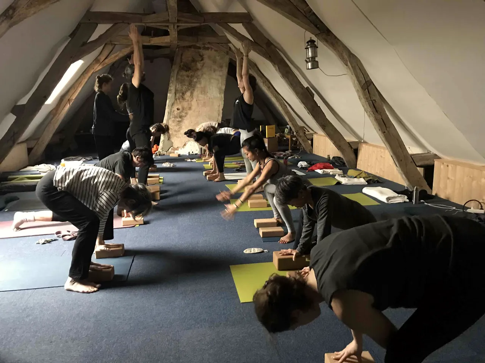

Salle de pratique
Sous les combles, au 2e étage. La charpente apparente la rend très contenante, et l’isolation en laine de bois lui garde une bonne température toute l’année. Elle sent bon le bois.
Surface : 80 ou 100 m² selon les pages du site actuel, à confirmer.